ロマサガ2の七英雄について
はじめに
ロマサガRSでワグナス、ノエル、ロックブーケの古代人スタイルが実装されたり、リアルクイーンが敵として登場したりしたにもかかわらず、その背景についてゲーム内では何も語られていない事が釈然としなかったのでこの記事を書いてみました。なぜ七英雄は「英雄」と呼ばれているにもかかわらず、原作ロマサガ2では敵として登場しているのか、彼らはどういう考えで行動し、どういった背景があるのか、ロマサガRSではなぜリアルクイーンが敵として登場したのか、それらについて自分なりに整理したのがこの記事です。
私はリマスター版をプレイしていなかったり、設定資料集的なものは読んだことが無いため、あくまでネットで拾った知識をつなぎ合わせただけのものになっています。私よりもロマサガ2に詳しい方々からすれば突っ込みどころの多いものになってしまっているかもしれないですが、ご容赦頂けると幸いです。
また、ロマサガ2のネタバレを多分に含んでいるため、ネタバレを見たくない方はブラウザをバックするか閉じてこの先には進まないようにしてください。
ロマサガ2の序章
ロマサガ2を起動して流れるオープニングがこれ。
七英雄という名前の通り、かつて彼らは英雄と呼ばれていましたが、実際のところどうなのでしょうか。
前提知識
ロマサガ2未プレイの方がこの記事を読み進めるために最低限必要な知識をざっくり解説します。プレイしたことがある方は必要ないと思うので、 七英雄との会話 までスキップしてください。
まずは NEW GAME で開始したときの動画です。
主人公（最終皇帝）の性別と名前を決めたのち、詩人の語りが始まります。
詩人の語りの後、名前を決めたキャラクタはおらず、皇帝であるレオンとその息子であるジェラールがいます。後で出てきますが、伝承法という特殊な技能で、レオンを含む歴代皇帝の力を後世に受け継いでいきます。最初に名前を決めた主人公は最後に力を受け継ぐ皇帝になるので最終皇帝と呼ばれています。
動画最後のダンジョンを攻略するとレオンが玉座に座ります。
オープニングにある通り、七英雄が帰ってきたという噂はあるものの、争いが収まる気配はない。そのことを嘆いているとオアイーブという人物が登場します。オアイーブは七英雄の一人であるクジンシーが危険な奴だと忠告しに来ました。
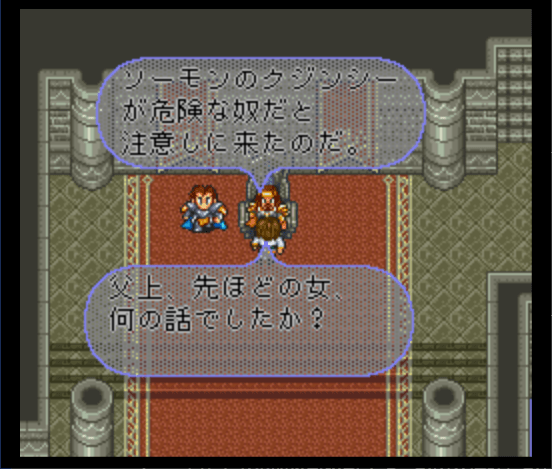

モンスターを討伐し、市民の安全を守ることも皇帝の仕事の一つ。オアイーブとの会話の後、レオンとジェラールはウオッチマンというモンスターを討伐しに行きます。
ウオッチマンを討伐してアバロンに戻ると、ヴィクトールが倒れています。クジンシーの一撃必殺技、ソウルスティールを喰らってしまった模様。
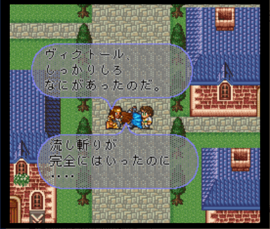
悲しみに打ちひしがれていると、とむらい合戦に行くというレオン。しかしヴィクトールと同様にソウルスティールで返り討ちにあってしまいます。
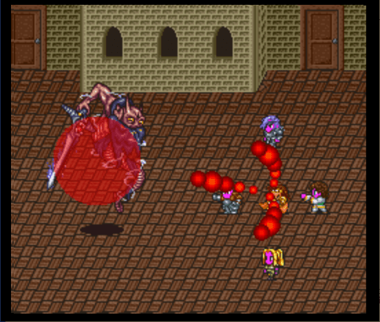
レオンの力をジェラールに引き継ぎます。
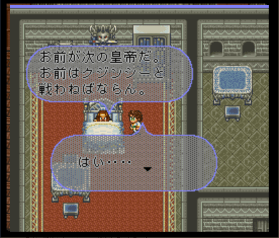
レオンの力を伝承するジェラール。その力で見事クジンシーを討伐します。
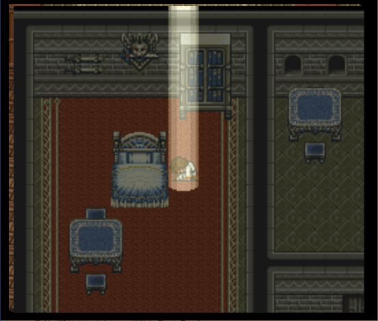
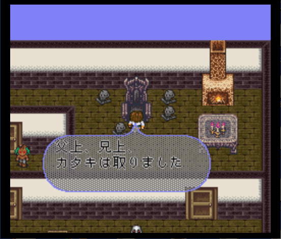
七英雄（とその周辺キャラ）との会話
ジェラールがクジンシーを討伐するまでの流れを見ると、七英雄は英雄でも何でもなくただの悪にしか見えないのですが、七英雄はちゃんと理由があって行動しています。これはゲーム中の七英雄およびその他キャラクターとの会話から分かるのですが、ご存じの通りロマサガ2はフリーシナリオシステムを採用しています。条件を満たさなければ会話すらないまま戦闘になったり、背景が語られるようなイベントに遭遇することなくゲームをクリア出来てしまうため、「なんかよくわからないけど七英雄という悪を倒してクリアした」というゲームになり得てしまいます。原作プレイ時の私がそうでしたし、何だったら大人になるまで全然そのことを知らかったので、以降、それらの知識を整理していきたいと思います。
七英雄の行動原理を知るためにまずは七英雄との会話内容から見ていきましょう。とは言えすべての七英雄が背景を語ってくれるわけではありません。ダンターグ、ノエル、ロックブーケ、スービエの4人（とその周辺キャラ）との会話で見える部分があるのでまずはそこから見ていきます。
ダンターグとの会話
まずはダンターグです。ダンターグとの会話内容は以下の通りです。

ダンターグは純粋に力を求めてモンスターと同化している模様。一方、ワグナスやノエルは復讐を考えていることがわかります。
復讐？誰にでしょうか。。
ノエルとの会話
次は復讐を考えているというノエルを見ていきます。ノエルに会うためには、砂漠にあるテレルテバという町に行く必要があります。テレルテバには塔が4つ立っています。それぞれモンスターが監視しているため、塔を登ってボスをシバキ上げるとノエルの部下であることがわかります。
画像：テレルテバ
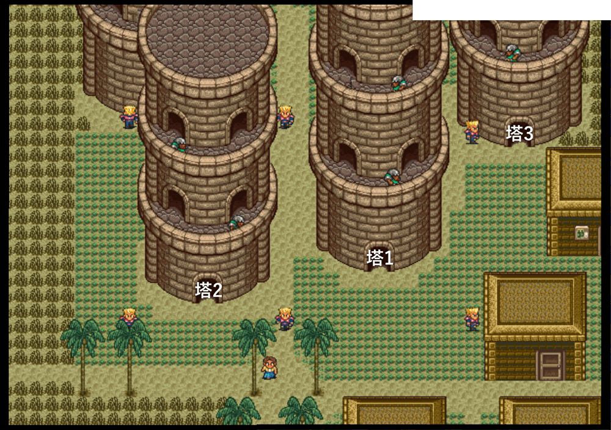
塔を攻略した後、ノエルに会った時の会話が以下です。
※攻略の仕方によってノエルのセリフは若干変わります。今回ご紹介するのは、テレルテバの左から2番目の塔だけを攻略してノエルに会いに行った場合の会話です。
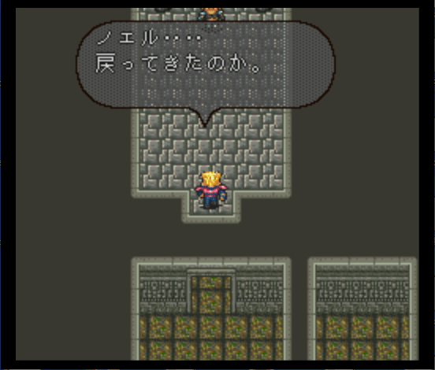
上の2枚の画像は皇帝が喋ってるようにも見えますが、ノエルとその後ろにいる人物との会話です。
ここから下は皇帝とノエルとの会話。
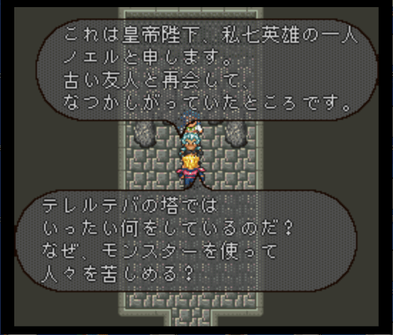
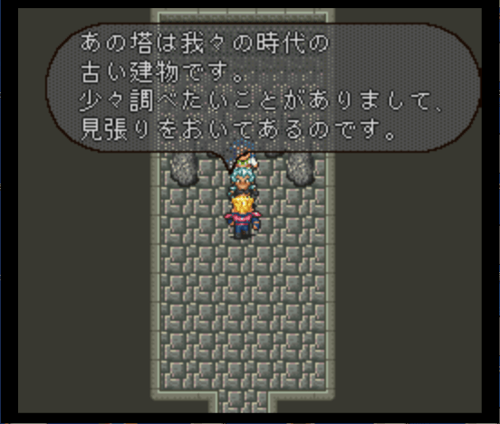
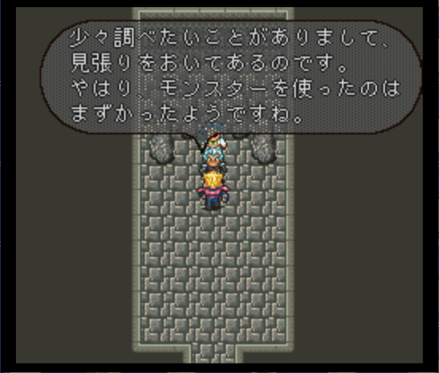
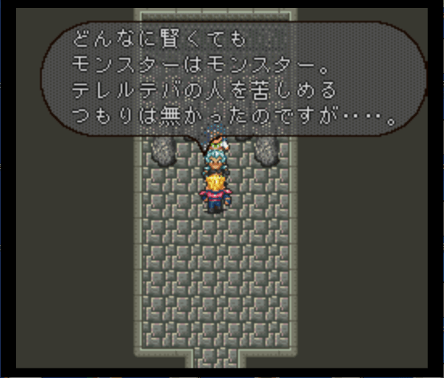
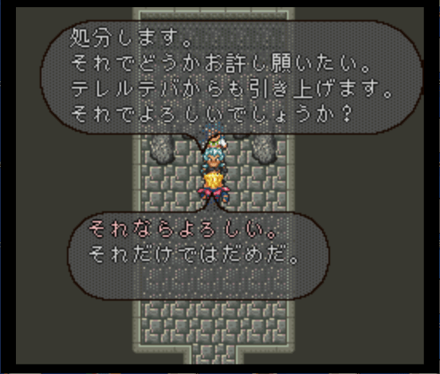
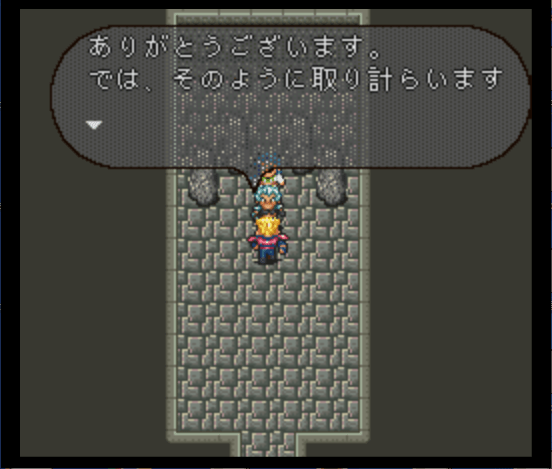
なんだか話の分かりそうな人物ですね。しかし塔について調べていたというのは気になります。何があるのでしょうか。
余談ですが、上の画像だと分かり辛いので一応解説すると、ノエルの最初のセリフ「サグザー」というのはノエルの後ろにいる人物の名前です。下の絵のような見た目をしています。同じ見た目の人が後で出てきます。ノエルのセリフからもわかるように、ノエルの友人です。
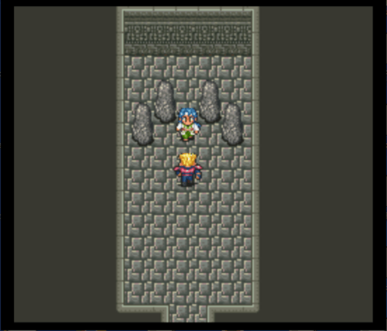
ロックブーケ＆水龍との会話
次はノエルの妹のロックブーケです。エイルネップという町にロックブーケがいます。町の奥に神殿があるのですが、「守護者」という石像のような敵が行く手を阻んでいます。
ロックブーケの得意技はテンプテーションで、男性を魅了してしまう技なのですが、守護者にはテンプテーションが効かないため、ロックブーケはこの敵が倒せずに神殿の奥に行くことができません。
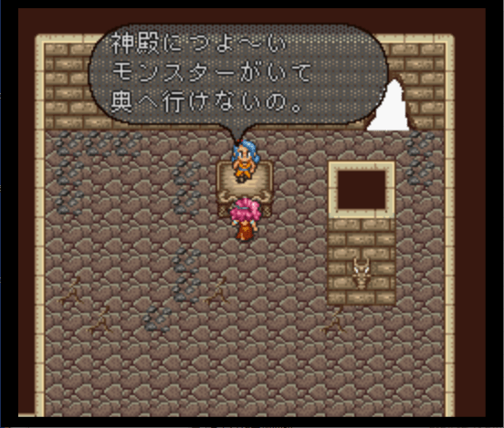
ロックブーケを無視して先に守護者を倒し、ロックブーケよりも先に神殿の奥に行くこともできます。
神殿の奥では以下の動画のような映像が流れます。
この映像から、「別次元への移動を行うことができる」ということと、「隠れた場所に塔がある」ということがわかります。ノエルも塔について調べていましたが、何か関係があるのでしょうか？とにかくその塔に行ってみます。
その塔の最奥地には水龍がいて、会話することができます。
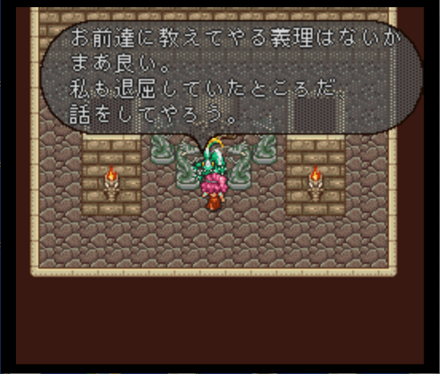
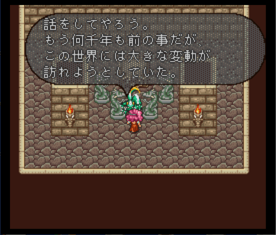
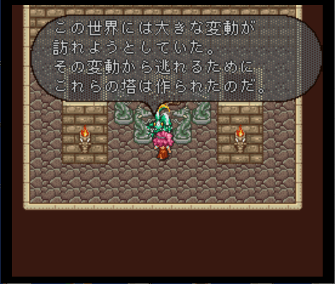
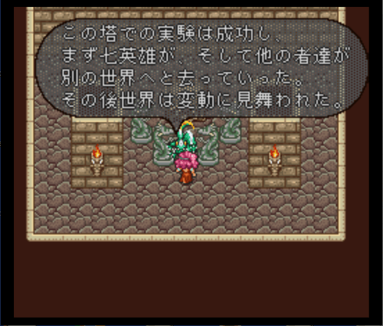
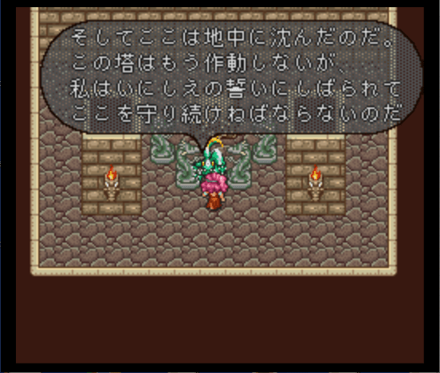
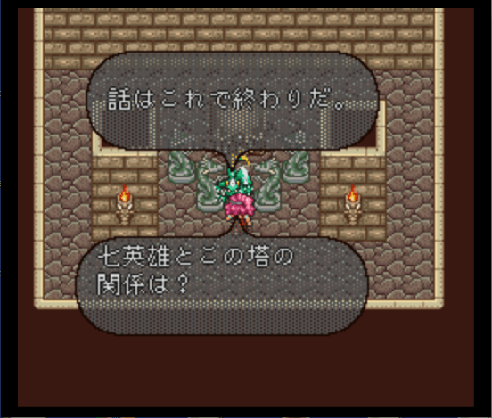
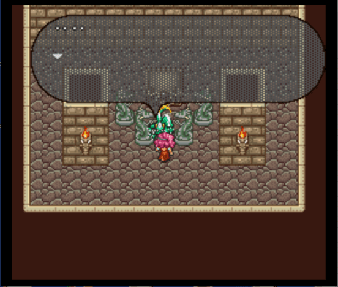
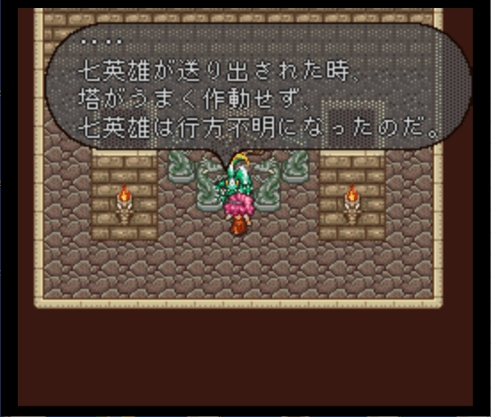
最後の「‥‥」が意味深ですね。。。
水龍との会話の後、守護者を倒したことをロックブーケに伝えるとどこかに行ってしまいます。
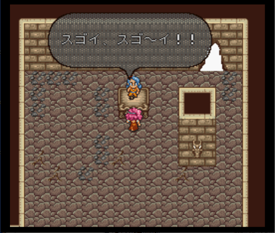
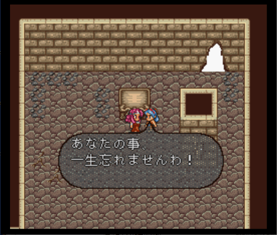
塔の最奥地の水龍がいたところに再度行ってみると水龍の後ろにロックブーケがいます。ロックブーケが後ろにいる状態だと水龍は何も言わずに襲い掛かってきます。
水龍を倒した後のロックブーケとの会話。
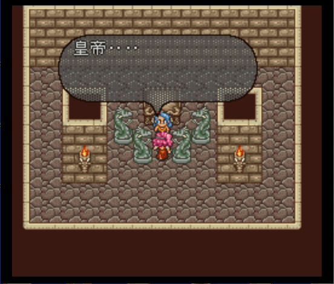
ロックブーケと戦闘になります。
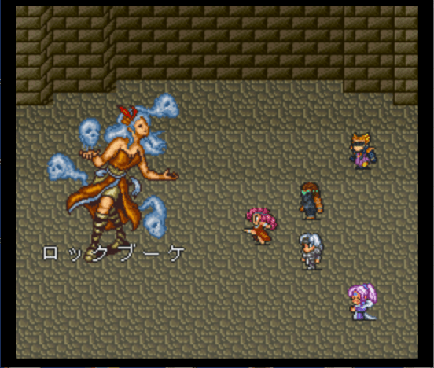
戦闘に勝利した後。
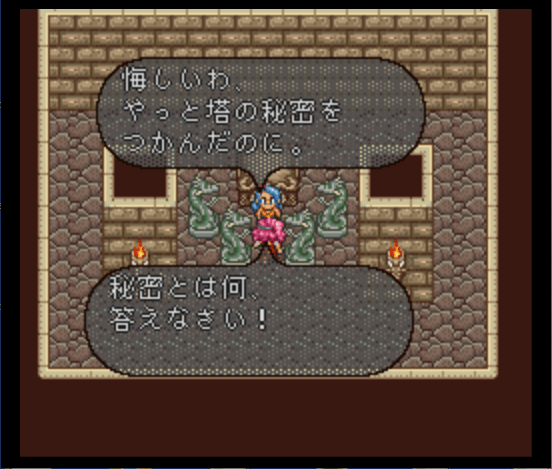
ロックブーケを倒してしまえばこれ以上の会話はありません。しかし、特に水龍との会話から様々な情報を得ることができました。世界に大きな変動（天変地異のようなもの）が発生、それから逃れるために別の世界へと去っていった人たちがいる。七英雄も逃れようとしたが、事故（？）か何かで行方不明になってしまった。ノエルとロックブーケはこの塔、つまり別の世界に移動するための装置について調べていたのでしょう。
スービエとの会話
次はスービエです。
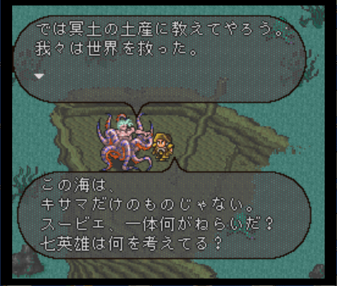
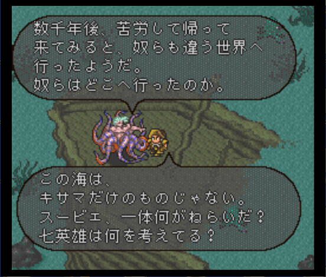
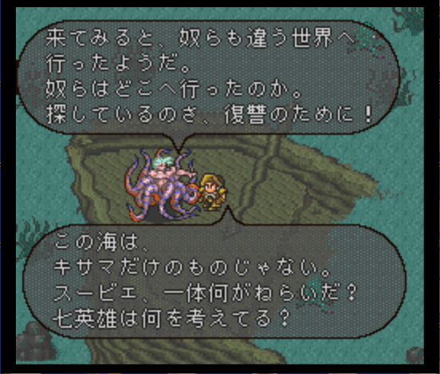
スービエも復讐のために動いている模様。水龍は「塔がうまく作動せず」と言っていましたが、スービエは「別の世界へ追放した」と言っています。意図的に追放されたということでしょうか？しかし勘違いの可能性もあります。真相は・・・？
忘れられた町での会話
ワグナスを倒すと「忘れられた町」という場所に行くことができます。ここには「古代人」と呼ばれる人種が住んでいます。以下はその古代人との会話です。
町の人１
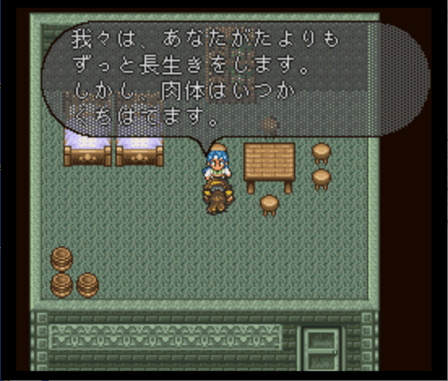
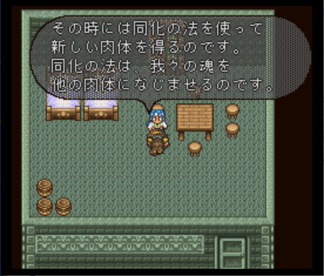

ワグナスとノエルは古代人で、強力なモンスターに立ち向かおうとしていた・・・！！やっと英雄っぽいエピソードが出てきましたね。ロマサガRSでワグナスがやたら正義感の強そうなセリフを言っているのはやはり元々は英雄だったからなんですね。
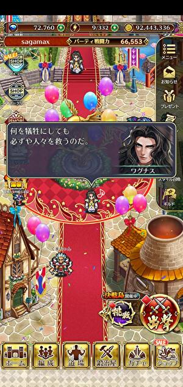
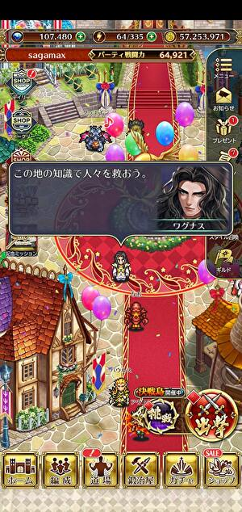

町の人２
もう一人の町の人との会話です。
 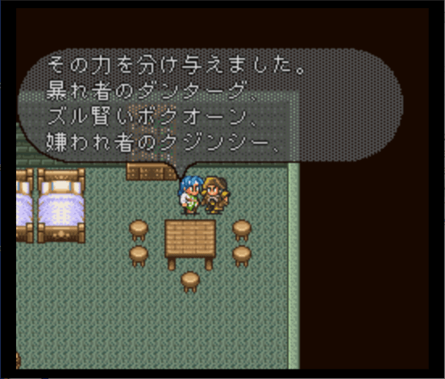
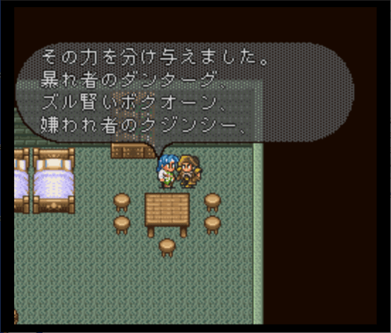
 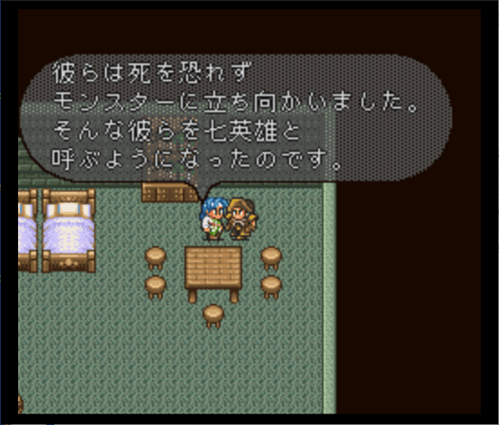
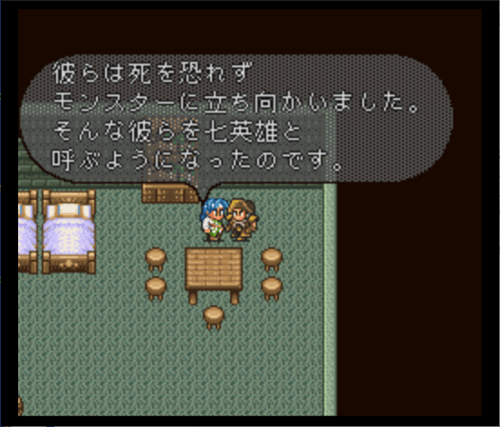
ワグナスとノエルは「同化の法」を強めて強い力を得ることができ、その力を仲間に分け与えた。これが七英雄の始まりです。
・・・ところで、古代人って、ノエルの友人であるサグザーと見た目似てますよね。
サグザーも古代人です。ノエルとサグザーは親しそうにも見えました。ノエル自身も古い友人と言っており、少なくとも復讐相手と会話していたようには見えない気がします。
ノエルは本当に復讐のために動いているのでしょうか？復讐のために動いてはいるけどサグザーは友人だから普通に接していたのでしょうか？その辺はちょっとよくわかりません。
オアイーブ
この街にはオアイーブがいます。レオンに伝承法を教えたあのオアイーブです。以下はオアイーブとの会話です。
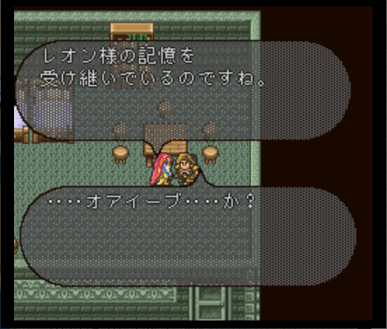
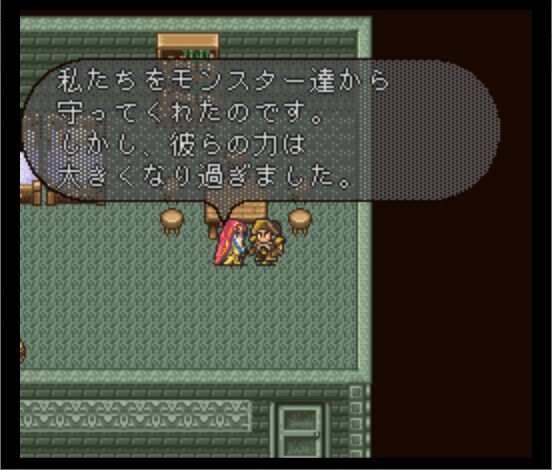
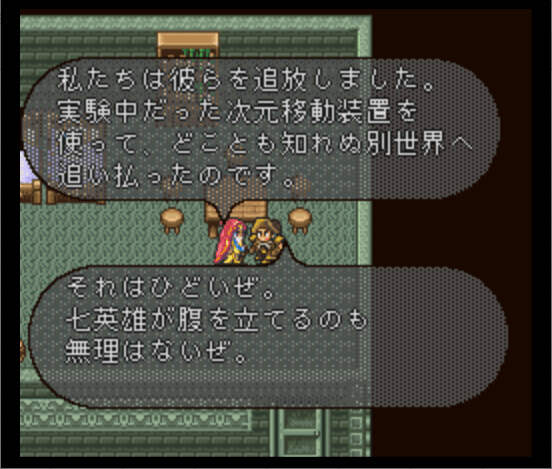
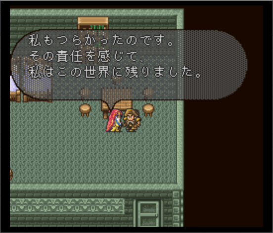
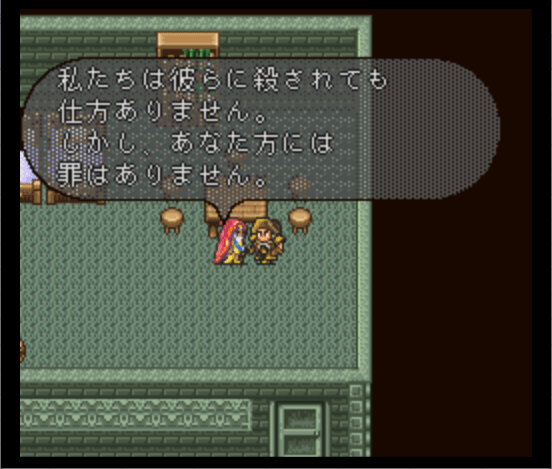
「その力は私たちの方に向かい始めたのです。」というセリフが具体的にどういったことを指しているのかは私にはわかりませんでした。しかしなんらかの理由で七英雄は疎ましく思われるようになってしまったということはわかります。
リアルクイーン
七英雄は古代人をモンスターから守ってくれたと言っていますが、七英雄が相手にしたモンスターはどういったものだったのでしょうか？原作で唯一語られているのがリアルクイーンです。リアルクイーンは、ターム族というアリのような見た目をしたモンスターの女王です。
画像：ターム族
リアルクイーンは作中屈指のトラウマイベントでした。原作未プレイの方でこれからプレイするつもりの方は是非初見で体験頂きたいイベントです（悪趣味）。なのでここでは詳細は語りません（別記事としては出すかもしれないですが）。リアルクイーンとの会話は以下です。
画像：リアルクイーン

「七英雄さえ恐れさせた」と言っています。七英雄が戦ったモンスターの中でも特に強敵という位置づけであることがうかがえます。実際、七英雄もこのクイーン（ターム族）は強力なモンスターと認識しており、そのことはロマサガRSで実装されたノエルのセリフからもわかります。
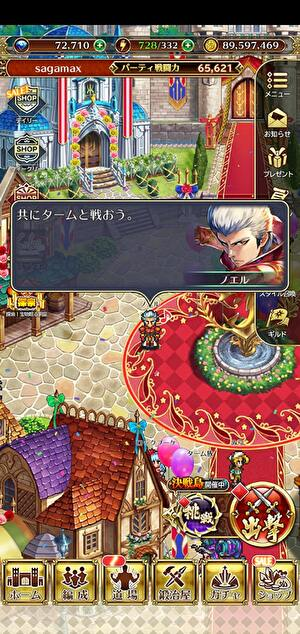
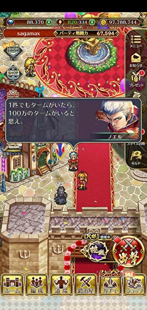
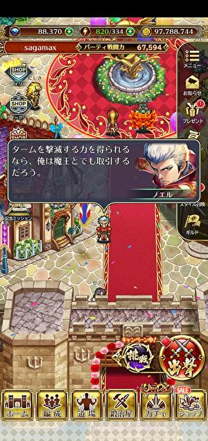
ロマサガRSで古代人Verのワグナス、ノエル、ロックブーケが実装された際にターム族との闘いのイベントが開催されたのも、ターム族は七英雄の宿敵だったからです。
ちなみに、ロックブーケが七英雄になったのはワグナスと親密になりたかったからです。ロマサガRSの魔塔ロックブーケでもそのようなセリフがありました。
下記動画の1分11秒頃です。
七英雄になった動機が動機なだけに、ロマサガRSのホーム画面でロックブーケに話しかけても英雄っぽいことは特に言いません。
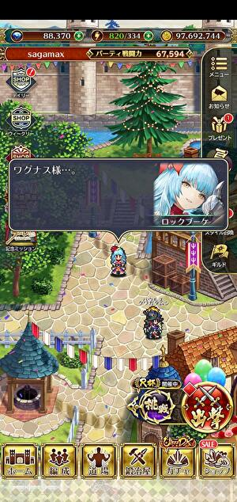
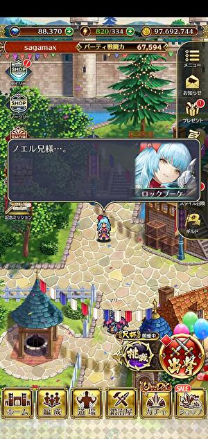
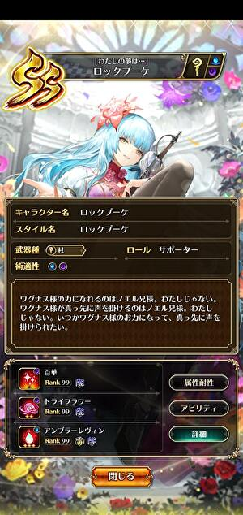
ここまでの情報のまとめ
ここまで得た情報をまとめるとこうです。
- 七英雄は、昔は本当に英雄だった。かつてモンスターと立ち向かい、人々（古代人）を守る存在だった。
- モンスターの中でも特にリアルクイーン（ターム族）は強い力を持っていた。
- 強敵を倒した七英雄の力は古代人達に向かうようになり、疎ましく思われるようになった。
- 一方、世界に変動（天変地異）が訪れようとしたため、古代人は次元移動装置（＝水龍がいた塔）の研究（実験）をし、変動から逃れようとしていた。
- 次元移動装置を使って別世界へ逃亡する際、疎ましく思っていた七英雄を、事故を装ってどことも知れぬ別世界へ追い払った。
- 七英雄以外の古代人は、七英雄とは違う安全な世界へと逃げて行った（オアイーブやサグザーなど、一部の古代人は元の世界にとどまった）。
- 数千年後、七英雄は苦労して元の世界に戻るが、殆どの古代人は既に別の世界に行っている。
- 七英雄のうち、ワグナス、ノエル、ロックブーケ、スービエは復讐のために古代人を探している。
えっと、、、古代人、酷すぎませんか？？？？。そりゃ七英雄も復讐したくなりますわ！
ゲーム中で語られる七英雄の背景はこれがすべてです（たぶん）。
これを受けて皇帝は・・・
七英雄は強い力を持っていて、その力がモンスターに向かっている間は英雄として扱われていました。しかしその力の矛先が古代人たちに向かったとき、厄介者として扱われてしまい、その結果、このような悲劇が起こってしまいました。
この話、主人公である皇帝にも当てはまりそうですよね。皇帝は強い力を持っていて、今はそれが七英雄に向いています。七英雄を倒した後はどうなってしまうのでしょうか？
ロマサガ2には「軍師」というキャラクタがいます。ロマサガRSではシゲンとコウメイがいますね。軍師との初めての会話は以下のようになっています。
人々が自分で自分のことをする。なるほど。
・・・軍師はロマサガ2のキャラクタであり、皇帝として選択することもできます。オアイーブとの会話からもわかる通り、皇帝は歴代皇帝の記憶を持っています。当然、この軍師との会話の記憶もあるはずです。この会話を受けて、最終皇帝はどのような結論を出すのか。
エンディングの後半部分で語られているので見てみましょう。
※サラマンダー好きな方には大変申し訳ないです。。。
帝国を、皇帝を君主とする君主制から共和国に変えることで、人々が自分に依存してしまうという状況を回避しました。
七英雄は、モンスターを討伐した後もその巨大な力を維持し続けました。その結果、古代人からは疎まれるようになってしまい、かのような悲劇を引き起こしてしまいました。
皇帝は、七英雄討伐のために力を身につけましたが、目的を達成したら自ら退位してその力を使わないようにしました。
巨大な力を持って疎まれた七英雄と対比するかのような決断です。しかし皇帝の偉業は忘れられるようなものではなく、人々の心の中に残り続ける・・・。
という結論ですかねこのエンディングは。
以上が、私が知っている範囲でのロマサガ2の七英雄の話です。少しでも多くの方が七英雄の背景を知り、ロマサガ2に興味を持っていただけたら幸いです。
もっとサガを知りたければこちら。
サガ クロニクル 増補版 SaGa Series 30th Anniversary Edition

もっとロマサガ2を知りたければこちら。
ロマンシングサ・ガ2〈完全攻略編〉

おまけ1_サガステ
公式が公開しているサガステの冒頭20分部分の動画です。
サガステは七英雄にスポットを当てたステージなので、この記事を読んだ後であればより味わい深いかも。
上記動画のフルバージョンかこちら（アマプラ）。
舞台｢SaGa THE STAGE ～七英雄の帰還～｣ Amazon Prime

DVD版はこちら。
舞台「SaGa THE STAGE‐七英雄の帰還‐」 [DVD]

サガステのサントラはこちら。
SaGa THE STAGE ~七英雄の帰還~ Original Soundtrack

おまけ2_小林絵
昔の七英雄の絵です。ロマサガRSのローディング画面にもなっていました。
ダンターグ

ノエル

ロックブーケ

スービエ

ワグナス

ボクオーン

クジンシー

ロマンシング サガ リ・ユニバース 1st Anniversary 公式ビジュアルブック

参考資料